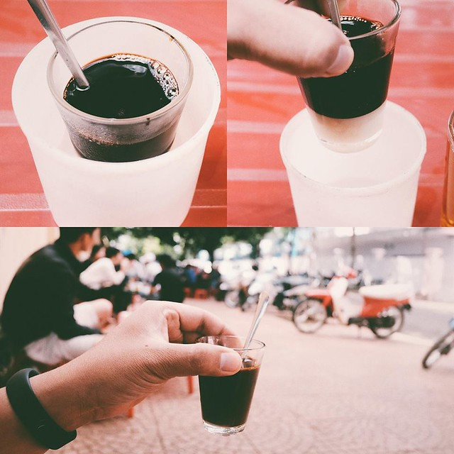

HƯƠNG VỊ KHÓ QUÊN CỦA ĐẠI NGÀN
Tuy không thể định nghĩa cách rõ ràng nhưng khi đã một lần nhấp thử cà phê Buôn Ma Thuột thì sẽ chẳng thể nào quên được hương vị thơm ngon đậm nồng. Chính đất đỏ bazan, độ cao phù hợp, hoà điệu với nắng gió Tây Nguyên đã tạo ra sự đặc trưng riêng của cà phê Buôn Ma Thuột.
Đó là những ly cà phê sóng sánh có màu từ cánh gián đến nâu đậm, vị chua thanh hoà quyện với vị đắng nhẹ tự nhiên, hương thơm rất dịu dàng, hấp dẫn có thể làm ngây ngất những ai yêu cà phê. Với 100% cà phê nguyên chất cộng với công thức và bí quyết rang xay đặc biệt, cà phê ở Buôn Ma Thuột đã ghi dấu ấn trong lòng mọi người bằng hương thơm quyến rũ, vị đậm đà tuyệt diệu.
Tuy xuất hiện nhiều loại thức uống mới mẻ thế nhưng cà phê luôn là sự lựa chọn hàng đầu của mọi người khi đến bất cứ quán cà phê nào ở Buôn Ma Thuột. Cà phê Buôn Ma Thuột là kiểu cà phê đặc, ly cà phê không nhiều nhưng đậm. Cà phê sữa thì đăng đắng pha chút ngọt dịu của sữa đặc nơi đầu lưỡi, hương thơm lan toả khắp các vị giác. Cà phê đen thì đắng nhẫn, đậm đà đúng điệu của cà phê, cho đá vào biến thành màu hổ phách trong trẻo, còn khi nắng vô tình chiếu rọi, màu nâu ấy lại sáng lung linh.
Có những nơi, khi khách đến uống cà phê, chủ quán mới bắt đầu rang xay và pha chế. Tiếng máy xay ồ ồ, hương cà phê lan toả mang lại cảm giác thích thú và thêm phần sốt ruột để thưởng thức ly cà phê nức tiếng.
Không dễ để phân định cà phê ở đâu là ngon nhất trong hàng trăm thương hiệu cà phê lớn nhỏ ở Việt Nam và càng khó nói trong hàng ngàn quán cà phê lớn nhỏ ở thành phố cao nguyên này ở đâu pha cà phê tuyệt nhất. Chỉ biết rằng, trong khí trời se lạnh, với ly cà phê Buôn Ma Thuột ấm nóng, hít hà mùi hương dịu nhẹ, tinh tế, người uống không chỉ thưởng thức cà phê mà còn thưởng thức cả hương vị đậm chất núi rừng Tây Nguyên hùng vĩ.
UỐNG CÀ PHÊ THEO KIỂU NGƯỜI BAN MÊ
“Alo, cà phê nha” chỉ ngắn gọn vậy thôi là tôi biết bạn bè lại í ới nhau tụ họp ở quán cà phê quen thuộc. Ở thành phố được coi là thủ phủ cà phê này, việc mời đi uống cà phê là một nét văn hóa, một phong cách sống. Từ người trẻ đến người lớn tuổi, viên chức hay người nội trợ cũng đều chọn vui buồn bên ly cà phê ngọt đắng. Một mình cũng có thể bầu bạn với cà phê, hay lúc tụ tập bạn bè cũng quây quần bên ly cà phê. Cà phê trở thành thứ ngôn ngữ không lời chia sẻ cảm xúc của người thưởng thức. Người Buôn Ma Thuột yêu cà phê và luôn tự hào khoe mình là người con của xứ sở cà phê..
Ngay cả cách uống cà phê Buôn Ma Thuột cũng mang đến bao điều thú vị. Ly cà phê của người Ban Mê thường chỉ nhỏ và ít nhưng rất chất lượng. Khi uống thì luôn chậm rãi, nhấp từng ngụm nhỏ, phải dành nhiều thời gian để thưởng thức trọn vẹn hương vị. Uống cà phê Buôn Ma Thuột thì không thể vội vã được, phải thư thả, từ tốn mới cảm nhận hết cái tinh tuý trong từng giọt cà phê. Phin cà phê nóng hổi, từng giọt cà phê chậm chạp tí tách rơi xuống dường như gia tăng thêm sự thi vị cho từng giọt đắng.
Quán cà phê có mặt ở hầu khắp các con phố Buôn Ma Thuột, từ những cung đường chính cho đến những ngõ hẻm hay con dốc nhỏ. Ở phố núi này, từ cà phê cóc, cà phê bình dân đến cà phê tên tuổi bạn cũng có thể dừng chân và thưởng thức một ly cà phê ngon hảo hạng.
Người Buôn Ma Thuột uống cà phê vào bất cứ giờ nào trong ngày, nhưng có lẽ sáng sớm tinh anh hay đêm xuống khi không khí se lạnh là lúc thưởng thức cà phê đúng điệu nhất. Giữa lòng thành phố nhỏ yên bình còn gì bằng khi cầm trên tay ly cà phê ấm nóng, tỉ tê tâm sự bao câu chuyện đời cùng người bạn tâm giao, hay chỉ là lặng yên lắng nghe từng hơi thở của thành phố.